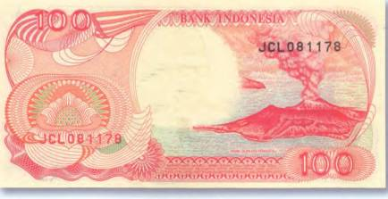
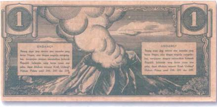
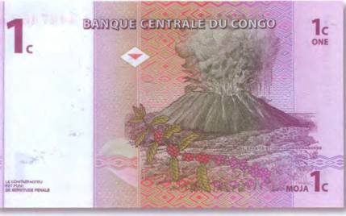

Тайны бумажных денег : Эхо Кракатау

На индонезийской банкноте в 100 рупий 1992 г. присутствует изображение печально известного вулкана Кракатау (рис. 128).
Он расположен на одноименном острове в Зондском проливе, между островами Ява и Суматра.

26 августа 1883 г. произошло самое мощное в современной истории извержение Кракатау. Столб раскаленных газов был выброшен из кратера на высоту 80 км. А грохот взрыва был слышен на тысячи километров вокруг, примерно на / площади планеты. Ученые рассчитали, что возникшие при извержении волны-цунами достигали более 30 м в высоту и обошли весь земной шар. Повышение уровня воды отмечалось даже в проливе Ла-Манш. В результате извержения погибло около 50 тыс. человек, и с лица земли были стерты сотни населенных пунктов. Очевидцы рассказывали, что ударная волна срывала крыши с домов и двери с петель даже в Джакарте, на расстоянии 150 км от места катастрофы. Живописные берега Суматры и Явы изменились до неузнаваемости. С них полностью исчезла пышная тропическая растительность. Через некоторое время после извержения у берегов Явы наблюдались массовые миграции бабочек. Аборигены были уверены, что это души погибших при взрыве людей. От когда-то огромной горы уцелела только треть. А сам остров разделился на три части: Раката, Сергун и Раката-Кегил. На месте разрушенного вулкана образовался новый Кракатау, или, как его называют индонезийцы, Анак Кракатау (Дитя Кракатау). Его контуры с курящейся ядовитыми газами конической верхушкой и красуются на индонезийском денежном знаке в 100 рупий 1992 г. Кстати, этому молодому вулкану современные ученые предсказывают судьбу его родителя. Дело в том, что гора продолжает довольно быстро расти. С начала XX в. ее размеры увеличились почти вдвое. Остается надеяться, что если мы и станем свидетелями еще одного впечатляющего извержения Кракатау, то оно хоть не повлечет за собой таких чудовищных жертв. Одно из первых банкнотных изображений Кракатау появилось еще в 40-х гг. прошлого века. Это бона в 1 рупию 1945 г. (рис. 129).

Извергающийся вулкан помещен художником на самой мелкой боне Демократической Республики Конго в 1 сантим 1997 г. (рис. 130). Это по-прежнему активный вулкан Найрагонго, вблизи города Тома. В результате сильнейшего извержения 10 января 1977 г. в течение только 30 минуг он унес жизни 2000 человек. Возможно, что на боне увековечена именно катастрофа 1977 г. Впрочем, в 2002 г. Найрагонго вновь разбушевался не на шутку. Это случилось 17 января. Тогда потоки смертоносной лавы, скатившись со склонов горы, достигли города Тома и разрезали его надвое. На пути лавы располагался и местный аэропорт. Однако участь быть погребенным под толщей лавы, его миновала (все находившиеся там самолеты в срочном порядке вылетели оттуда). В то же время охваченные паникой жители города в спешке покидали свои дома и бежали к границе с Руандой. Извержение сопровождалось сильным землетрясением. Под угрозой находились жизни 400 тыс. человек, проживавших в окрестностях Найрагонго. В результате извержения 2002 г. без крова остались почти 300 тыс. жителей, а его жертвами стали 45 человек.
